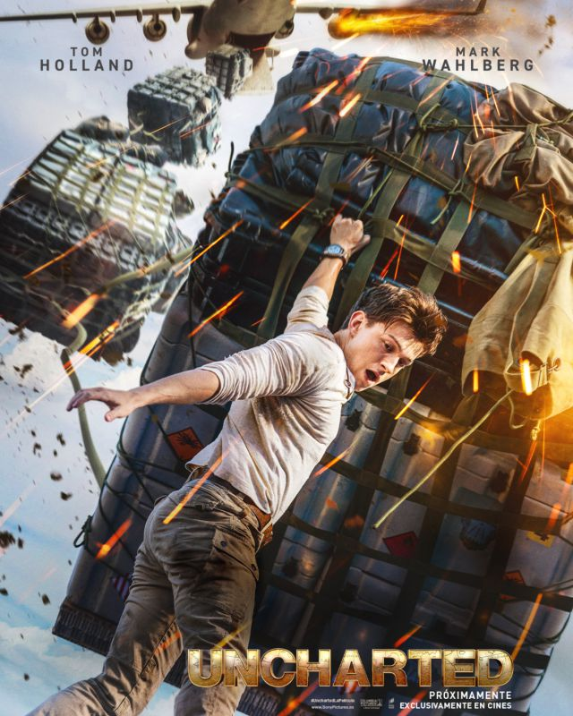

Mas Información!! Por primera vez en la historia cinematográfica de Spider-Man, nuestro héroe, vecino y amigo es desenmascarado, y por tanto, ya no es capaz de separar su vida normal de los enormes riesgos que conlleva ser un superhéroe. Cuando pide ayuda al Doctor Strange, los riesgos pasan a ser aún más peligrosos, obligándole a descubrir lo que realmente significa ser él. Secuela de 'Spider-Man: Far From Home'.
Mas Información!! Por primera vez en la historia cinematográfica de Spider-Man, nuestro héroe, vecino y amigo es desenmascarado, y por tanto, ya no es capaz de separar su vida normal de los enormes riesgos que conlleva ser un superhéroe. Cuando pide ayuda al Doctor Strange, los riesgos pasan a ser aún más peligrosos, obligándole a descubrir lo que realmente significa ser él. Secuela de 'Spider-Man: Far From Home'.  Información! En su segundo año luchando contra el crimen, Batman explora la corrupción existente en la ciudad de Gotham y el vínculo de esta con su propia familia. Además, entrará en conflicto con un asesino en serie conocido como "el Acertijo".
Información! En su segundo año luchando contra el crimen, Batman explora la corrupción existente en la ciudad de Gotham y el vínculo de esta con su propia familia. Además, entrará en conflicto con un asesino en serie conocido como "el Acertijo".

Información de la Pelicula!! El cazador de tesoros Victor Sullivan recluta a Nathan Drake para que lo ayude a recuperar una fortuna de 500 años. Lo que comienza como un atraco se convierte en una carrera de trotamundos para alcanzar el premio.
 Click para mas Información!! Después de establecerse en Green Hills, Sonic quiere demostrar que tiene madera de héroe. La prueba de fuego llega con el retorno del malvado Robotnik, y su nuevo compinche, Knuckles, en busca de una esmeralda que destruye civilizaciones. Sonic forma equipo con su propio compañero de fatigas, Tails, y juntos se lanzan a una aventura que les llevará por todo el mundo en busca de la preciada piedra para evitar que caiga en manos equivocadas.
Click para mas Información!! Después de establecerse en Green Hills, Sonic quiere demostrar que tiene madera de héroe. La prueba de fuego llega con el retorno del malvado Robotnik, y su nuevo compinche, Knuckles, en busca de una esmeralda que destruye civilizaciones. Sonic forma equipo con su propio compañero de fatigas, Tails, y juntos se lanzan a una aventura que les llevará por todo el mundo en busca de la preciada piedra para evitar que caiga en manos equivocadas.